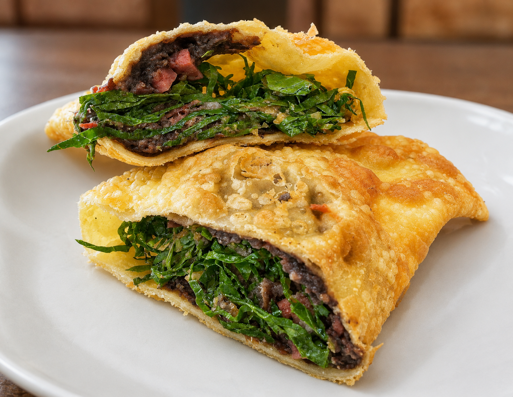
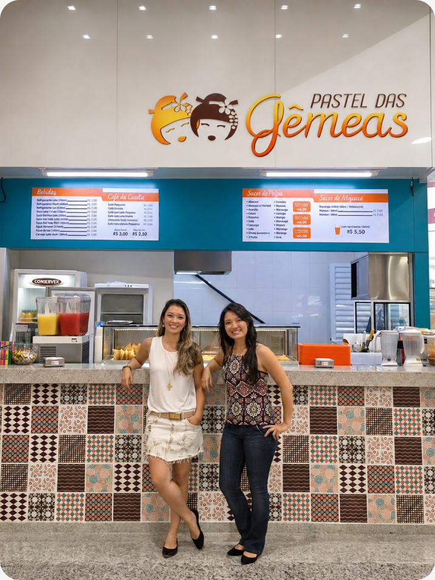
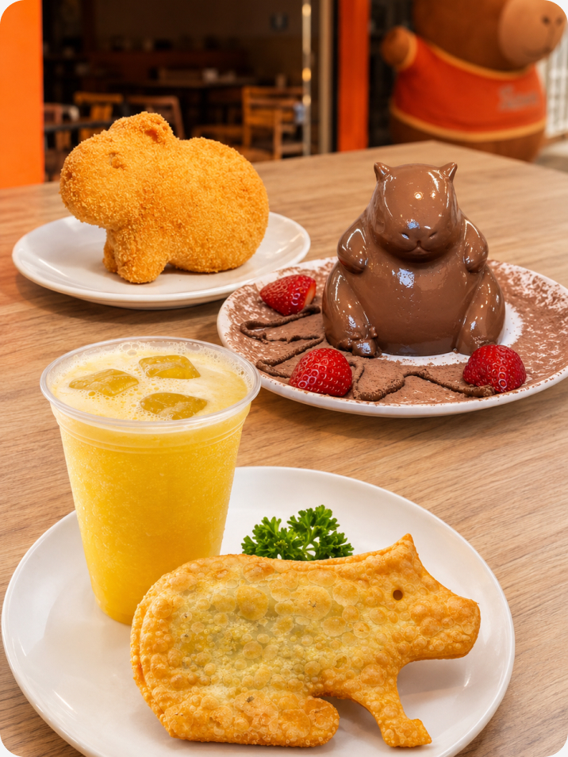

Dá pra reinventar produtos já consagrados?
Reinventar clássicos pode despertar a curiosidade do consumidor e levar gente nova ao balcão, mas exige testes e mudanças na rotina da cozinha. Na pastelaria que criou a própria versão do pastel de feijoada, quem paga a conta continua sendo o sabor de sempre.
Por: Mara Andrich
Mudar o recheio, o formato ou o tamanho de um salgado que todo mundo conhece é um jeito de lanchonetes e pastelarias chamarem a atenção do cliente. Em Mogi das Cruzes (SP), o Pastel das Gêmeas fez isso com a feijoada, e o pastel novo ajudou a levar clientes a uma loja que demorava a ter movimento.
A loja foi aberta em 2016 pelas irmãs Márcia Mitiko Tanaka Boucault e Katia Suemi Tanaka, fora do centro, dentro de um supermercado.
A empresa familiar, aberta em 1972 pelo pai das duas, trabalhava essencialmente com pastéis clássicos. Carne, queijo e palmito faziam parte da rotina de produção.
“Meu marido fez uma feijoada pra chamar amigos. No fim desse encontro, eu não sabia o que fazer com tanta feijoada que sobrou. Foi aí que veio a ideia de montar um pastel.”
Márcia Mitiko Tanaka Boucault, sócia do Pastel das Gêmeas
O caminho das irmãs se repete em outros balcões do país: pegar um alimento já consagrado, reinventá-lo e apresentá-lo de outra maneira ao consumidor. A prática vem ganhando espaço no foodservice.
Mas existem algumas questões por trás dessas novidades: será que reinventar um clássico realmente ajuda a vender mais? E, principalmente, o que faz o consumidor trocar a curiosidade pela vontade de comprar novamente?
Mudanças no recheio, na montagem e para a entrega
Vieram os testes. A receita passou por ajustes até encontrar a consistência e o sabor desejados. O feijão foi batido para ganhar uma textura mais cremosa e firme. Entraram carne seca, linguiça calabresa e couve refogada. Ainda faltava alguma coisa. Márcia e Katia decidiram chamar amigos e parentes para experimentar a receita em casa. Foi nesse momento que descobriram o ingrediente que completaria a combinação: o torresmo, triturado numa farofa. “Com o torresmo na mesa, percebi que era justamente esse toque que daria mais sabor”, conta Márcia.
Mas a transformação não terminou no recheio. Para garantir a qualidade do produto, as proprietárias modificaram a montagem e a rotina de produção. O pastel passou a ser preparado na hora do pedido, em vez de ficar pronto em uma estufa, aguardando a fritura. O recheio de feijão, produzido em quantidades maiores, passou a ser congelado em pequenas porções. A massa também mudou. Ficou mais grossa para suportar o tempo de fritura e manter o recheio aquecido, além de garantir maior firmeza durante o transporte. Na pandemia, quando a casa passou a fazer entregas, a massa foi melhorada de novo para aguentar o caminho sem quebrar nem murchar.
Uma boa ideia precisa ser viável na rotina do estabelecimento: funcionar dentro da cozinha e, principalmente, dentro das contas do negócio.

O resultado foi além de uma nova opção no cardápio: causou estranheza no início. “Alguns perguntavam se vinha com arroz e o feijão em grãos. E achavam essa composição um pouco estranha. Porém, depois de explicar como é feito e montado, o cliente já mudava de ideia e queria realmente provar sem medo”, contam as sócias.
O lançamento foi feito com os clientes mais antigos da casa, convidados a provar, e a divulgação seguiu por cartazes na loja, fotos da montagem e o Facebook.
O cliente busca novas experiências, mas não abre mão do que já conhece
A reação dos clientes de Mogi aparece também numa pesquisa internacional. A Taste Tomorrow, da Puratos, multinacional belga de ingredientes para panificação, realizada com 11 mil consumidores de 25 países, mostrou que seis em cada dez buscam novas experiências gastronômicas. No Brasil, 81% disseram gostar de encontrar elementos familiares quando experimentam um sabor novo, na edição de 2023 da pesquisa.
Foi o que aconteceu com o pastel de feijoada: o cliente estranhou enquanto imaginava arroz e feijão em grãos e aceitou quando entendeu que continuava diante de um pastel, frito e para comer com as mãos.
O desafio, para quem vende, é identificar o que pode surpreender o cliente sem afastá-lo daquilo que ele já gosta.
81%
dos consumidores brasileiros disseram apreciar a presença de elementos familiares quando experimentam novos sabores.
Fonte: Taste Tomorrow, da Puratos, edição de 2023.
O pastel de feijoada mexeu no recheio e, por isso, pediu testes e outra rotina de cozinha. Há reinvenções que pedem menos: o produto ganha uma aparência afetiva, divertida ou inusitada, sem necessariamente alterar sua receita.
O calendário também pode inspirar o cardápio
Se uma feijoada que sobrou pode virar um novo produto, datas comemorativas também podem funcionar como ponto de partida para a criatividade.
No Maloca Food Cake, em Mossoró (RN), o chef e confeiteiro Marcondes Maloca viu a boa aceitação da Ovoxinha, criada para a Páscoa. A experiência abriu caminho para uma nova aposta no Dia dos Namorados: a Coraxinha, uma coxinha em formato de coração que pesa cerca de 1,4 kg e serve de três a quatro pessoas.
A estratégia permite trabalhar com edições especiais, testar a aceitação e criar motivos para o público voltar ao estabelecimento.
E não são apenas as datas comemorativas que movimentam esse comportamento. Um estudo do iFood com a WGSN, consultoria britânica de tendências, apresentado no iFood Move, em setembro de 2026, apontou a influência de acontecimentos culturais sobre os pedidos de delivery. Segundo o levantamento, 35% dos usuários afirmam que a curiosidade os leva a experimentar comidas que viralizam.
A identidade da cidade vira ingrediente
Existe outro elemento que ajuda a explicar por que alguns alimentos reinventados conquistam o público: a memória afetiva. A Taste Tomorrow também aponta que o resgate de produtos clássicos desperta conexões emocionais, levando as pessoas a associarem a comida a momentos especiais de suas vidas.
Em Curitiba (PR), por exemplo, a capivara deixou de ser apenas um animal frequentemente avistado no Parque Barigui para se tornar uma espécie de mascote informal da cidade e chegou ao balcão. Na Pastenina - The Pastel Place, ela aparece em pastel, coxinha e flan. Os produtos se conectam a um símbolo reconhecido pelos moradores e despertam a simpatia dos visitantes.

Mas é importante observar se a curiosidade gerada pelo momento se transforma em vendas e se existe interesse suficiente para manter a novidade depois que a ocasião passa.
O clássico ainda é quem paga a conta
Apesar de as reinvenções trazerem visibilidade e destaque para os estabelecimentos, uma pergunta permanece: afinal, o que acontece com o produto original? Nos casos desta reportagem, ele continua sendo o protagonista. No Maloca Food Cake, por exemplo, cerca de 80% das vendas vêm dos salgados, principalmente das coxinhas, segundo o chef Marcondes Maloca.
No Pastel das Gêmeas, os sabores tradicionais de carne, queijo e palmito continuam sendo os mais pedidos, segundo as sócias, que não têm números de venda. O pastel de feijoada ajudou a atrair consumidores para a loja do supermercado, com um público de perfil diferente daquele do mercadão municipal, onde fica a primeira loja. No começo, ele só era feito na loja nova, justamente para chamar clientes. A clientela passou a ser frequente em 2018, e quem vinha pela feijoada acabava conhecendo os outros produtos da casa, contam as sócias.
O pastel de feijoada sai mais nos fins de semana e nos dias frios, por ser um recheio mais pesado e de montagem mais demorada, mas não é o que mais vende.
“O pastel de feijoada não é nosso carro-chefe, mas, a partir do momento que convencemos os nossos clientes a provar, falando o passo a passo da montagem, vira quase o preferido para os sábados. Quase dá pra substituir um almoço.”
Sócias do Pastel das Gêmeas
Antes de reinventar um salgado
- 1
Quanto tempo a nova modelagem exige?
- 2
A equipe consegue reproduzir o produto com padronização?
- 3
Os ingredientes adicionais cabem na margem de lucro?
- 4
A equipe precisará de treinamento ou de equipamentos novos?
- 5
O produto mantém a qualidade durante o transporte?
- 6
A novidade pode ser produzida sem prejudicar os itens tradicionais?
- 7
Dá para testar em pequena escala, numa data comemorativa, numa edição limitada ou numa rodada de prova com os clientes mais antigos, como fez o Pastel das Gêmeas?
E depois do lançamento, será que vale a pena continuar?
- O produto tradicional continua sendo mais procurado do que a versão reinventada?
- A novidade manteve um bom volume de vendas por um período prolongado ou teve procura apenas no primeiro mês?
- O resultado compensa os custos e o tempo de produção?
As respostas ajudam a decidir se o produto deve permanecer no cardápio, voltar em ocasiões especiais ou dar lugar a uma nova experiência.
Aprenda a calcular o preço de um produto novo com a Academia Assaí.
Academia Assaí